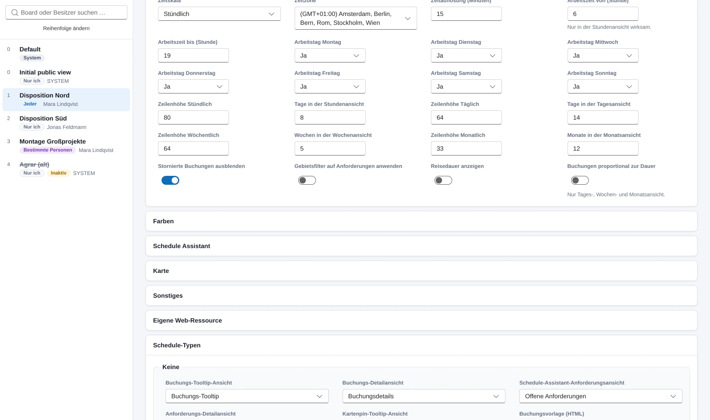
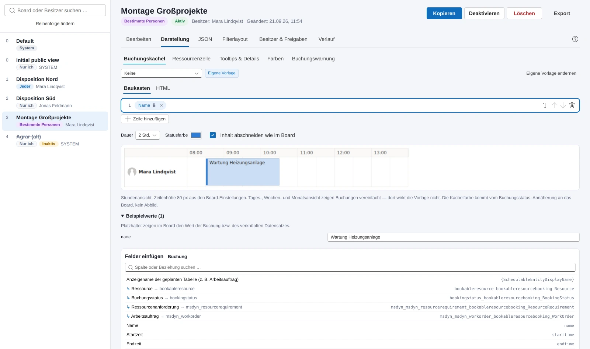
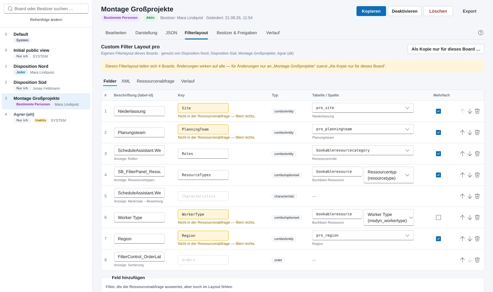
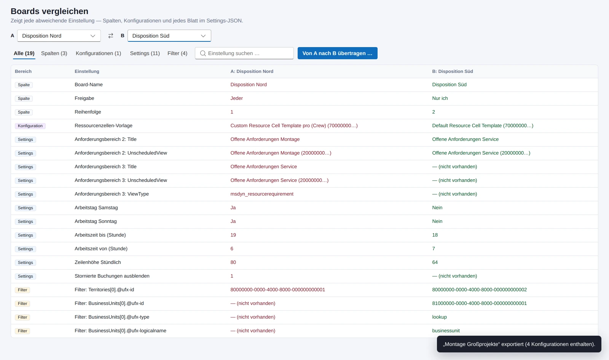

Eigenes Produkt, in der Testumgebung eines Kunden im Einsatz
Schedule Board Manager
Eine Power Apps Code App für die Tabs des Schedule Boards in Dynamics 365 Field Service und Project Operations. Sie kopiert Boards samt ihrer Konfigurationen, bearbeitet jede Einstellung in einem Formular statt im JSON, zeigt Buchungskachel, Ressourcenzelle und Farben in einer Live-Vorschau, vergleicht Boards, überträgt Einstellungen auf mehrere Boards und bringt ein Board mit allen Verweisen in eine andere Umgebung. Jede Änderung zeigt vorher, was sich ändert.
Typ
Power Apps Code App, läuft im Tenant des Kunden
Technik
React, TypeScript, Vite, Fluent UI v9
Daten
Schedule Board Settings und ihre Konfigurationen in Dataverse, Konnektor für Freigaben und Metadaten
Jeder Tab, den Disponenten oben im Schedule Board sehen, ist ein Datensatz der Tabelle Schedule Board Setting. Darin stecken ein paar Dutzend Spalten, ein JSON mit Zeitskala, Arbeitszeit, Zeilenhöhen, Schedule-Typen und Anforderungsbereichen, die gespeicherten Filterwerte und drei Verweise auf eigene Konfigurationszeilen: das Filterlayout, die Ressourcenzellen-Vorlage und die Ressourcenabfrage. Wer ein Board für ein zweites Team braucht, legt es bisher von Hand neu an oder bearbeitet das JSON im Formular. Wer wissen will, warum sich zwei Boards unterschiedlich verhalten, vergleicht zwei JSON-Texte.
Microsoft liefert dafür ein FastTrack-Steuerelement, das Boards lesen, kopieren, löschen und aktivieren kann, aber nicht bearbeiten. Seine Kopie übernimmt nur Schlüssel mit dem Präfix msdyn_ und verliert dabei die drei Verweise auf die Konfigurationen, und genau dort hängen in gewachsenen Umgebungen die kundeneigenen Filter und Abfragen. Der Schedule Board Manager setzt dort an: Kopieren mit allen Verweisen, Bearbeiten im Formular, Darstellung mit Vorschau, Vergleichen, Übertragen auf mehrere Boards und in andere Umgebungen.
Im Spiel sind ausschließlich Konfigurationsdaten des Schedule Boards, keine Buchungen und keine Personendaten. Die Abbildungen auf dieser Seite zeigen die App mit den eingebauten Beispieldaten, einer fiktiven Disposition mit erfundenen Namen, nicht mit Kundendaten.
Die App läuft seit dem 1. Oktober 2026 in der Testumgebung eines Kunden aus der Automatisierungstechnik, der sein Schedule Board über Project Operations betreibt. Der Weg nach Produktion steht an, die Export- und Importfunktion ist dafür gebaut.
Ein Board
Von der Liste bis zum Verlauf: alles, was an einem einzelnen Board hängt.
Board-Liste und Aktionen
Links alle Boards mit Position, Freigabeart, Status und Besitzer, oben eine Suche nach Name und Besitzer. Die Reihenfolge der Tabs lässt sich umstellen. Kopieren fragt nach Name, Freigabe und Position und nimmt die drei Konfigurations-Verweise mit, auf Wunsch auch die Datensatz-Freigaben. Eine Kopie ist nie ein System-Board, aus „System“ wird „Jeder“. Dazu Aktivieren, Deaktivieren, Löschen, Export und der Sprung zum Datensatz-Formular.
Kopie mit allen drei Verweisen
Reihenfolge der Tabs
Export als Paket
Speichern, Konflikte, Verlauf
Vor dem Schreiben zeigt eine Vorschau jedes geänderte Feld, bis hinunter zu den einzelnen Werten im JSON, und geschrieben werden nur die geänderten Spalten. Vorher prüft die App die Versionsnummer des Datensatzes, denn das Schedule Board selbst schreibt die Einstellungen bei jeder Ansichtsänderung. Der vorherige Stand landet im Verlauf, lokal im Browser, die letzten zehn, und lässt sich als Entwurf zurückladen.
Diff bis auf den JSON-Wert
Konfliktprüfung über die Versionsnummer
Zehn Stände im Verlauf
Bearbeiten: jede Einstellung im Formular
Das Formular folgt dem Field Mapping von Microsoft: Board-Ansicht, Farben, Schedule Assistant, Karte, Sonstiges mit den drei Konfigurations-Verweisen, eigene Web-Ressource, die Schedule-Typen je Buchungsart und die Anforderungsbereiche mit Hinzufügen, Sortieren und Entfernen. Nicht gesetzte Felder zeigen den Wert des Default-Boards, von dem sie erben. Für alles, was das Formular nicht kennt, bleibt der JSON-Reiter.
Das JSON der Einstellungen wird nie neu aufgebaut. Der Editor ändert genau den jeweiligen Pfad, unbekannte Schlüssel bleiben, wie sie sind, und davon gibt es reichlich. Schalter, die das Board nur als vorhandenen Schlüssel kennt, werden beim Ausschalten entfernt und nicht auf null gesetzt, so wie es das Board selbst tut.
Formular nach dem Field Mapping
Geerbte Werte des Default-Boards sichtbar
Unbekannte Schlüssel bleiben erhalten

Die Board-Liste und das Formular eines Boards. Beispieldaten, eine fiktive Disposition, keine Kundendaten.
Darstellung: sehen, was der Disponent sieht
Der Reiter bündelt alles Sichtbare eines Boards mit einer Live-Vorschau. Die Buchungskachel je Schedule-Typ als Baukasten aus Zeilen mit Feldern und Text, Felder über die Beziehungen der Buchung per Klick, darunter die Kachel in einer Stundenansicht mit Dauer, Statusfarbe und Zeilenhöhe; wer will, bearbeitet das HTML direkt. Die Ressourcenzelle als Handlebars-Vorlage mit den Variablen aus der Ressourcenabfrage, in vier Zuständen und in der Schedule-Assistant-Ansicht, mit eigenem Speichern und Zeilen-Diff. Tooltips und Details aus den Spalten der hinterlegten Ansichten. Farben für Tages- und Stundenansicht und Schedule Assistant. Die Buchungswarnung.
Der Designer zeigt, ob eine Vorlage dem Board gehört, vom Default-Board geerbt ist oder der Produkt-Standard greift, und prüft auf JavaScript und falsche Platzhalter. Vorlagen-HTML läuft in der Vorschau in einem abgeschotteten Rahmen ohne Skripte. Die Vorschau nähert das Board an, sie ist kein Abbild: Das CSS des Boards ist außerhalb des Boards nicht verfügbar.
Baukasten statt HTML für die Kachel
Eigener Handlebars-Interpreter für die Zelle
Vererbung vom Default-Board sichtbar
Farben mit Vorschau: Tagesansicht, Stundenansicht und Schedule Assistant, gefärbt aus den Werten des Boards.

Die Buchungskachel als Baukasten: Zeilen mit Feldern, die Vorschau in der Stundenansicht und die Felder der Buchung samt ihren Beziehungen.
Filterlayout: die Felder links im Board
Die Felder des Ressourcenfilters stehen nicht im Board, sondern als XML in einer eigenen Konfigurationszeile, die sich mehrere Boards teilen können. Die App bearbeitet Beschriftung, Schlüssel, Tabelle und Spalte, Mehrfachauswahl und Reihenfolge, entfernt Felder und legt neue an, mit Tabellen und Auswahlspalten aus den Metadaten der Umgebung. Sie zeigt, welche Boards das Layout teilen, und legt auf Wunsch eine Kopie nur für das aktuelle Board an.
Ein Feld filtert erst, wenn die Ressourcenabfrage seinen Schlüssel auswertet. Die App liest die Abfrage des Boards und markiert Felder ohne Gegenstück mit „filtert nichts“. Umgekehrt schlägt sie jeden Schlüssel vor, den die Abfrage kennt, der im Layout aber fehlt, mit seiner Wirkung in Klartext, und füllt Art, Tabelle, Spalte und Beschriftung vor. Unbekannte Attribute und verschachtelte Elemente im XML bleiben unverändert, Container nur über den XML-Reiter.
Geteilte Layouts sichtbar, Kopie je Board
Abgleich mit der Ressourcenabfrage
Vorschläge für fehlende Felder

Ein Layout, das sich vier Boards teilen, und Felder, die nichts filtern, weil die Ressourcenabfrage ihren Schlüssel nicht kennt.
Besitzer und Freigaben
Für Boards mit „Bestimmte Personen“ zeigt die App, wer das Board sieht, Benutzer und Teams, ändert die Stufe zwischen Lesen und Bearbeiten, entfernt Freigaben und findet neue Personen per Live-Suche ab zwei Zeichen; mehrere Wörter grenzen ein. Der Besitzer lässt sich auf einen Benutzer oder ein Besitzer-Team ändern, mit Bestätigung und Hinweisen; System-Boards sind ausgenommen. Bei „Nur ich“ ist das der Weg, ein Board an jemand anderen zu übergeben.
Lesen oder Lesen und Bearbeiten
Live-Suche über Name und E-Mail
Mit den Rechten des angemeldeten Nutzers
JSON
Einstellungen und Filterwerte als Rohtext, für alles, was das Formular nicht abbildet: die Inline-Kopien der Schedule-Assistant-Konfigurationen in den Schedule-Typen, Schlüssel, die Microsoft nicht dokumentiert, Experimente. Auch hier gilt die Diff-Vorschau beim Speichern.
Fallback für Undokumentiertes
Dieselbe Speicherleiste
Mehrere Boards, mehrere Umgebungen
Vergleichen, auf mehrere Boards übertragen, in eine andere Umgebung bringen.
Vergleichen
Zwei Boards Feld für Feld: Spalten, die drei Konfigurationen und jeder Wert im JSON der Einstellungen, filterbar nach Bereich und durchsuchbar. Zwei Boards, die sich unterschiedlich verhalten, zeigen hier den Grund. „Von A nach B übertragen“ springt mit den vorausgewählten Feldern direkt in „Mehrere anpassen“.
Spalten, Konfigurationen, Settings
Direkt in die Übertragung

Zwei Boards Feld für Feld. Was abweicht, steht in Rot und Grün nebeneinander.
Mehrere anpassen
Ein Vorlage-Board, eine Auswahl aus Konfigurationen, Schlüsseln der Einstellungen, Filterwerten und Spalten, und die Ziel-Boards. Vor dem Anwenden steht die Vorschau je Board, danach das Ergebnis je Board. Im Modus „Besitzer ändern“ bekommen mehrere Boards einen neuen Besitzer; System-Boards und Boards, die ihm schon gehören, werden übersprungen.
Vorschau je Ziel-Board
Besitzer für mehrere Boards
Hilfe in der App
Ein Panel von rechts über der App, der ungespeicherte Entwurf bleibt dabei erhalten. Fünfzehn Abschnitte von Überblick bis Häufige Fragen, Inhaltsverzeichnis mit Suche und Hervorhebung. „Hilfe“ in der Kopfzeile öffnet beim aktuellen Bereich, das Fragezeichen neben den Reitern beim aktuellen Reiter.
Erklärt Vererbung, geteilte Konfigurationen, Filter ohne Wirkung
Export und Import: ein Board in eine andere Umgebung
Ein Board besteht fast nur aus IDs, und nur ein Teil davon ist in jeder Umgebung gleich. Der Export schreibt deshalb ein Paket: das Board mit allen Spalten, Einstellungen und Filterwerten, jede referenzierte Konfiguration mit Inhalt, dazu Name und Tabelle jeder Ansicht, die Tabelle jedes Schedule-Typs, der Name der Zeitzone und Tabelle und Primärname jedes Datensatzes in den gespeicherten Filtern. Nicht im Paket: Freigaben, Besitzer, Verlauf.
Der Import ordnet jede ID der Zielumgebung zu, erst über die ID, dann über den Namen, und jede Zeile lässt sich ändern. Konfigurationen werden verwendet, neu angelegt, mit dem Inhalt der Datei überschrieben oder leer gelassen, mit Inhaltsvergleich und Warnung, welche Boards sie noch nutzen. Was kein Gegenstück hat, fällt sauber weg statt als tote ID zu bleiben. Ziel ist ein neues Board oder ein bestehendes, das ersetzt wird, mit Diff-Vorschau und Verlauf.
Konfigurationen mit Inhalt im Paket
Zuordnung per ID, dann per Name
Neues Board oder bestehendes ersetzen
Der Import: jede Konfiguration aus der Datei bekommt ein Gegenstück in der Zielumgebung oder wird neu angelegt. Nichts wird geschrieben, bevor die Zuordnung steht.
Quer durch die App
Was überall gilt, unabhängig vom Bereich.
Schutzregeln
Boards mit Freigabe „System“ und die festen Boards von Universal Resource Scheduling lassen sich weder löschen noch deaktivieren noch umbenennen. Die „Initial public view“ hat in jeder Umgebung eine andere ID und die Freigabe „Nur ich“; sie wird deshalb über ihren Namen in drei Sprachen erkannt und ist vor dem Löschen geschützt. Eine Kopie ist nie ein System-Board.
Das JSON der Einstellungen wird pfadgenau geändert und nie neu aufgebaut. Eine Vorlage, die das Board nicht setzt, bleibt geerbt und wird nicht als Kopie ins Board geschrieben, bis jemand das ausdrücklich will. Jedes Speichern zeigt vorher den Diff.
Rechte und Grenzen
Alles läuft mit dem Konto des angemeldeten Benutzers. Freigaben und Metadaten gehen über den Dataverse-Konnektor an einer Benutzer-Verbindung, bewusst nicht an einem Dienstkonto: Sonst könnte jeder Nutzer der App mit dessen Rechten beliebige Boards teilen. Besitzer ändern braucht das Recht „Zuweisen“ auf Schedule Board Settings. Im Power-Apps-Host laufen Fehler bis in die Oberfläche durch, es gibt keinen stillen Rückfall auf Beispieldaten, damit ein Schreibvorgang nie scheinbar gelingt.
Bewusst nicht enthalten: das Bearbeiten der Ressourcenabfrage selbst, sie ist nur lesbar; die Schedule-Assistant-Konfigurationen im Formular, nur über JSON; ein zentraler Verlauf, der liegt im Browser.
Datenweg
Boards, Konfigurationen, Buchungs-Setups, Ansichten, Benutzer, Teams und Zeitzonen kommen über die generierten Datenquellen der Code App. Freigaben lesen über die Zugriffstabelle und schreiben über die Aktionen GrantAccess, ModifyAccess und RevokeAccess; Tabellen, Spalten und Beziehungen für die Feldauswahl kommen aus den Metadaten der Umgebung, je Sitzung zwischengespeichert. Ohne Metadaten bleiben die Felder Freitext.
Der Besitzerwechsel ist ein Update auf das Besitzer-Feld, die Web-API-Form von „Zuweisen“. Zugriffsteams können nichts besitzen und tauchen in der Suche nicht auf. Die Vorschau der Zellvorlage rendert ein eigener kleiner Handlebars-Interpreter, weil die Bibliothek mit dynamisch erzeugtem Code kompiliert; nachgebildet sind nur die Helfer aus den Microsoft-Beispielen, Unbekanntes wird gemeldet statt geraten.
Bauweise
Die Oberfläche hängt an einer Service-Schnittstelle, nicht direkt an Dataverse. Ohne Verbindung läuft die App mit Beispieldaten im Speicher, was Demos und Entwicklung ohne Tenant möglich macht; ein Hinweis in der Kopfzeile zeigt den Modus. Die Oberfläche nutzt Fluent UI v9, dieselbe Bibliothek, auf der die Modern Controls von Power Apps aufbauen, und bricht ihre Spalten nach der verfügbaren Breite im Host um, nicht nach der Fensterbreite.
Einstellungsmodell, Schutzregeln, Filterlayout-XML, Abfrage-Analyse, Personensuche, Transferpaket, Vorlagen, Handlebars-Interpreter, Zeilen-Diff und Farben sind reine Funktionen mit Tests, getrennt vom Datenzugriff. Der Baukasten der Buchungskachel schreibt im Stil der vorhandenen Vorlage, damit im Diff nur die Änderung steht.
Mehr als ein Team am Schedule Board?
Wenn bei Ihnen Boards von Hand nachgebaut werden, zwei Boards sich unterschiedlich verhalten und niemand sagen kann, warum, oder ein Board von der Testumgebung nach Produktion soll, schreiben Sie mir kurz. Die App läuft im Tenant des Kunden, ohne Dienstkonto.